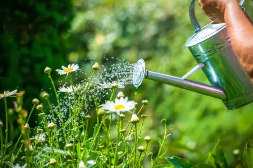

Plant Watering Guidelines

- Check Soil Moisture: Before watering, check the moisture level of the soil. Stick your finger about an inch into the soil; if it feels dry, it's time to water.
- Watering Frequency: The frequency of watering depends on the type of plant, the season, and the climate. Some plants prefer consistently moist soil, while others prefer to dry out between waterings.
- Morning Watering: It's usually best to water plants in the morning. This allows the plant to take up moisture before the heat of the day, and any excess water on leaves can evaporate.
- Water at the Base: Water the soil around the base of the plant rather than overhead. This helps prevent diseases by keeping foliage dry.
- Deep Watering: When you water, do it thoroughly. Water should reach the root zone. Shallow watering can lead to shallow root systems.
- Use Room Temperature Water: Avoid using very cold or very hot water. Room temperature water is generally best for most plants.
- Mulching: Mulching around plants helps retain soil moisture by reducing evaporation. It also helps regulate soil temperature.
- Adjust for Seasonal Changes: Plants often need less water during the dormant winter months than during the active growing season in spring and summer.
- Use the Right Container: If you have potted plants, make sure the containers have drainage holes to prevent overwatering.
- Watch for Signs of Overwatering or Underwatering: Yellowing leaves, wilting, or soil that is consistently wet or dry can be signs that you need to adjust your watering routine.
- Consider the Type of Water: Some plants are sensitive to the minerals in tap water. If your tap water is hard or contains a lot of chlorine, you might want to use filtered or distilled water.